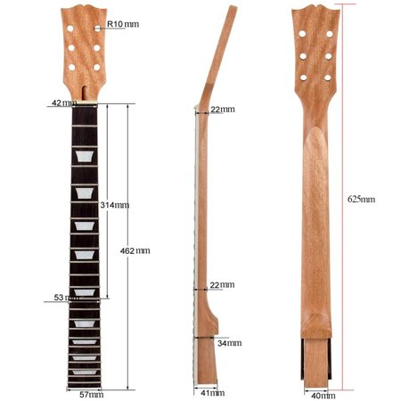

Qu'est-ce qu'une guitare électrique?
La guitare électrique est, comme le nom le dis, une guitare.
Cet instrument a habituellement 6 cordes, mais il existe des modèles avec 7, 8 et même 12 cordes. La guitare électrique est une version "moderne"
de la guitare et pour en jouer il faut avoir un amplificateur de guitare ainsi que d'un fil et bien évidemment de l'électricité. Un amplificateur est
un appareil audio qui reçois le signal de la guitare et le transforme en son.
Le signal reçu provient des "pickups" de la guitare. Une guitare électrique
possède habituellement 2 "pickups", mais plusieurs modèles en ont 3 et quelques uns n'en ont qu'un seul. Le "pickup" est une pièce se trouvant sur le corps
de la guitare en dessous des cordes et qui peux capter la vibration des cordes et transformer cela en un signal électrique. Pour faire cela, des aimants
entourés de fils de cuivre afin de créer un champ magnétique entourant la corde. Il existe 2 types de "pickups", les "single coil" et les "humbuckers".
La différence entre les 2 est le fais que les "singles coils" n'ont qu'une seule rangée d'aimants, donc 1 par corde, contrairement aux "humbuckers" qui en
ont 2. Cela a comme avantage de réduire l'interférence lorsqu'on utilise beaucoup de distortion.
Si vous avez déjà regardé une guitare électrique,
vous avez probablement remarqué qu'il y a des boutons et très souvent une sorte d'interrupteur sur la guitare. L'interrupteur est en fait un sélecteur
qui permet de choisir entre les différents "pickups", donc on en trouve seulement sur les guitares qui ont 2 ou 3 "pickups". Les boutons servent à
régler le volume et le "tone"(change le son de la guitare). Certaines guitares ont plus de contrôles. De plus, il existe des pédales qui servent à
modifier le son de la guitare. Il y a beaucoup de sortes de pédales, voici un lien Wikipédia pour voir les plus communes. Dans le tableau suivant, vous pourrez voir les différentes composantes d'une guitare électrique.

|
Ceci est le "corps" de la guitare, la partie qui contient tout l'électronique, les contrôles ainsi que le "début" des cordes (lorsqu'on met les cordes sur une guitare, on dois les faire passer par le corps en premier). |
|---|---|
|  | Le manche d'une guitare. Un joueur place ses doigts sur le manche (Plus précisément sur le "fretboard") afin de jouer. Le manche est divisé en "frets". Chaque pièce de métal sur le manche sépare les frets. Habituellement, une guitare a de 21 à 23 frets. Les trapèzes blancs servent de repère au joueur afin qu'il puisse savoir sur quel fret il est. Le premier trapèze se situe le fret #3, puis 5, 7, 9, 12, 15, 17,etc jusqu'au bout du manche. La plupart des guitares on des points blancs et non des trapèzes, la forme utilisé dépend du modèle. Certaines guitares plus chères on des formes spéciales qui rendent la guitare plus belle et certaines n'on aucune forme. Il existe aussi des guitares sans frets, qu'on appelle "fretless". Elles permettent de jouer des sons différents. |

|
Sur cette image, on peux voir des pickups de type humbucker. Tout les humbuckers ne ressemblent pas à ça, certains ressemblent plutôt à 2 single coils collés un à côté de l'autre. |
 |
Voici des pickups de type single coil sur une Fender Stratocaster. Remarquez les cercles en métal sur chaque pickup. Il s'agit des aimants qui détectent les vibrations des cordes. |
 |
Ceci est ce qu'on appelle le "pont". Les cordes passent par là et sont tenues en place grâce à cette pièce. La tige de métal est une "whammy bar". Elle sert à augmenter ou réduire la tension sur les cordes afin de changer le son. Ce n'est pas toute les guitares qui en ont. Le modèle sur cette photo inclue un "Floyd rose", un modèle de pont qui permet de tirer la whammy bar ou de la pousser. Normallement on ne peux que la pousser, ce qui réduis la tension et rend le son plus grave. Cependant avoir un Floyd rose rend le changement de cordes ou de "tunings" plus difficile. |

| Les contrôles de la guitare. On peux voir les 2 boutons pour le tone, un pour le pickup près du pont et un pour le pickup près du manche, le bouton pour le volume ainsi que le sélecteur de pickup. Comme pour toute les images précédentes, il s'agit seulement que d'un exemple, il existe plusieurs modèles de guitares avec des configurations différentes. |
 |
La tête de la guitare. Sur cette image on peux voir différents styles de tête selon les marques et les modèles de guitares. C'est la que les cordes sont attachées aux tuners, les pièces en métal que l'on peux tourner. En les tournant, cela ajuste la tension sur les cordes afin de l'accorder ou de changer le tuning. |